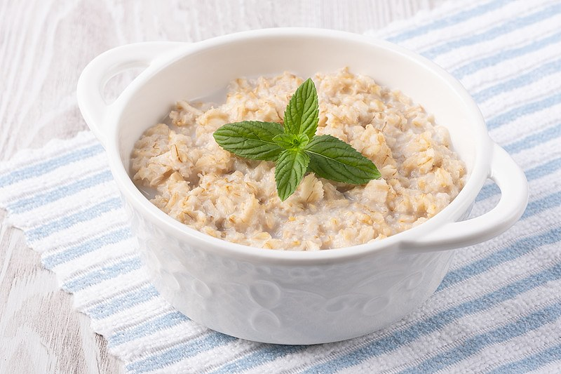
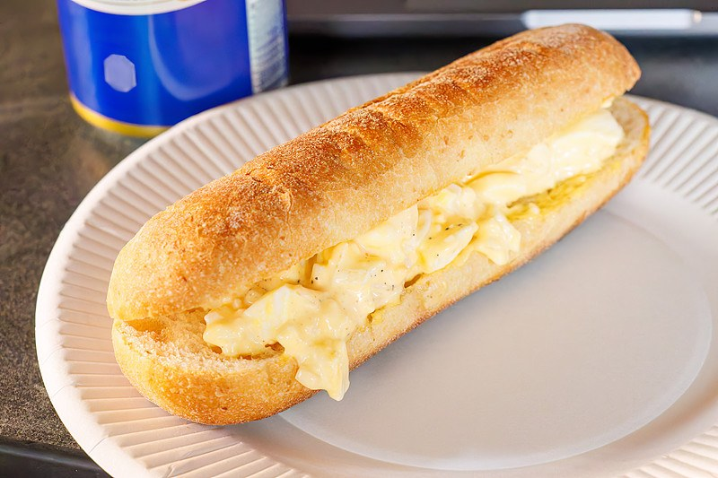
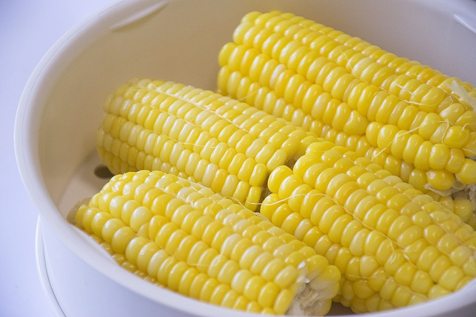
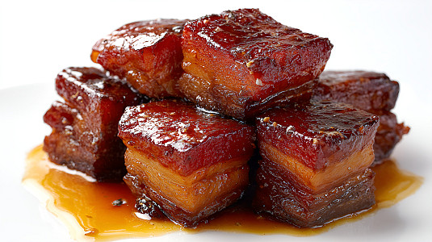
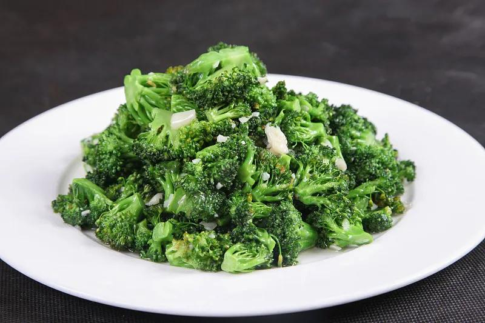
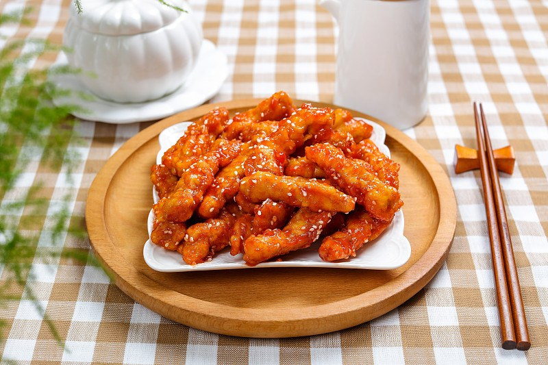
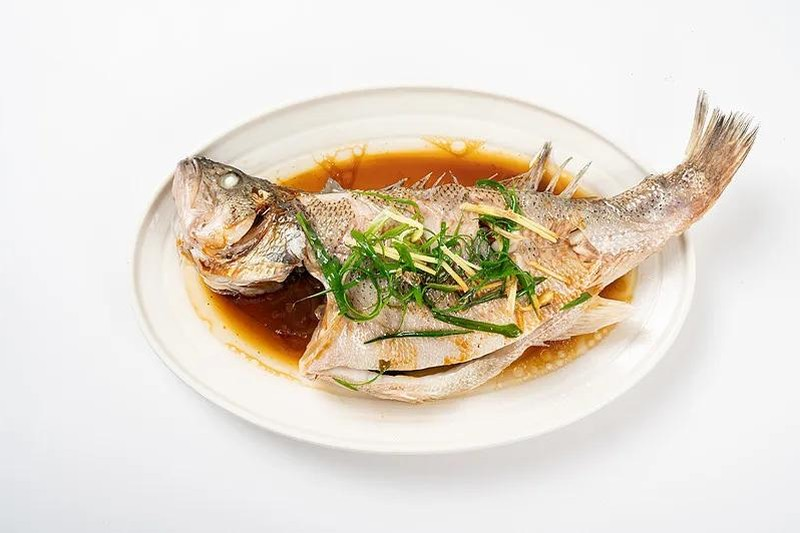
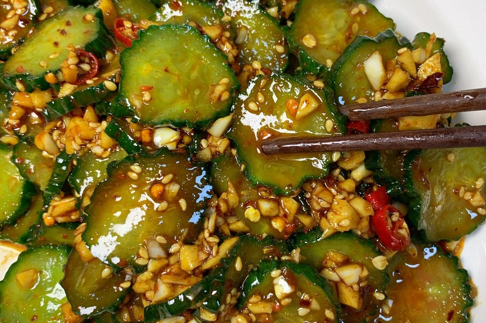

牛奶燕麦粥
燕麦软糯、牛奶香浓，早上喝一碗暖胃又顶饱。
2026 年 10 月 15 日 星期四 · 早午晚三餐营养均衡

燕麦软糯、牛奶香浓，早上喝一碗暖胃又顶饱。

嫩滑煎蛋夹进香软面包，方便又营养，孩子超喜欢。

清甜软糯的玉米段，粗粮营养，帮助肠胃动起来。

酸甜开胃，鸡蛋软嫩，是最容易让孩子接受的一道家常菜。

小火慢炖至软烂，肥而不腻，配上米饭小朋友能多吃半碗。

少油快炒保留脆嫩口感，颜色翠绿，清爽解腻不挑食。

外酥里嫩、酸甜可口，配上米饭孩子能吃得很香。

清蒸锁住鲜嫩，肉质细滑刺少，健康又补蛋白。

清脆爽口、解腻开胃，晚上吃清淡又没负担。